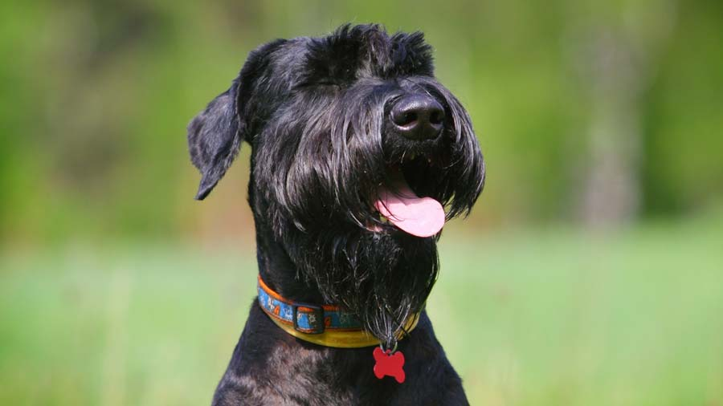
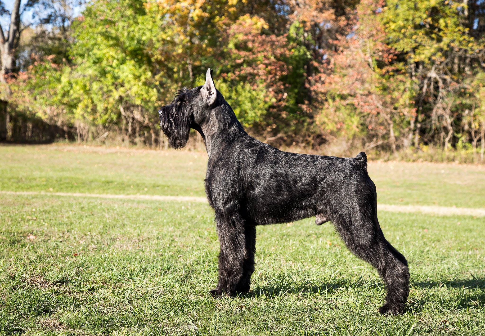
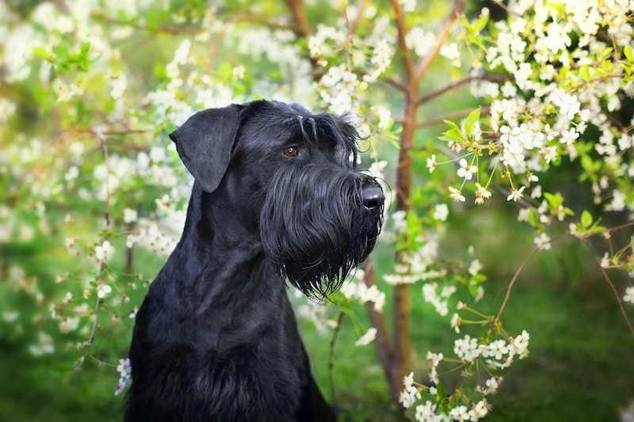
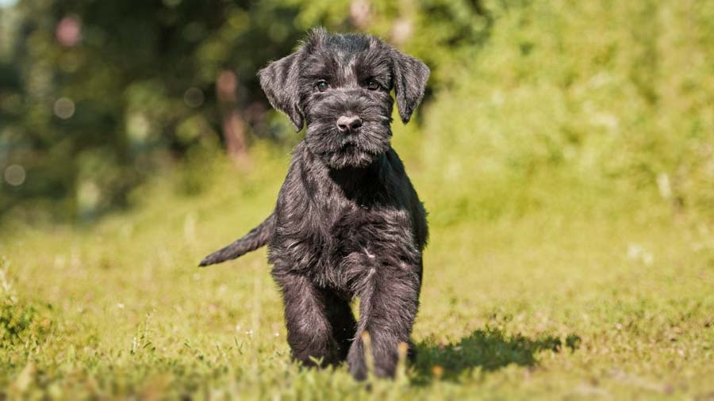

Giant Schnauzer

origin
Germany
size
Large
color
Black
type
Purebred
breed group
Working (AKC:1930), Companion Breeds (UKC)
character
Smartest
temperament
Dominant
Kind
Intelligent
Powerful
height
26-28 inches (66-71 cm)
weight
60-105 pounds (27-48 kg)
geography
Europe
overview
The Giant Schnauzer is a larger, more powerful version of the standard schnauzer. Its body is strong, compact and nearly square, combining great power with agility. Its stride is free and vigorous, with good reach and drive. Its double coat consists of a soft undercoat and a harsh, wiry, dense outer coat — a combination that enables it to withstand harsh, alpine conditions. Its hallmark harsh beard and eyebrows, coupled with its smart outline, make for a striking figure. The combination of rugged build, reliable temperament and weather-resistant coat make for a powerful and versatile worker.
history
The Giant Schnauzer is a separate breed from the Miniature Schnauzer and Standard. Their country of origin is Germany. Breeds were developed for specific work in the 1600's; this breed was developed to be used as drovers of sheep and cattle and as a guard dog. Its coat was also influenced by weather and living conditions. Some of the breeds which were used in the development were the Standard Schnauzer, Great Dane, Rough Collies and possibly the Bouvier des Flandres. The breed was not that well known until World War I when it was used for police training.
Photo Gallery


